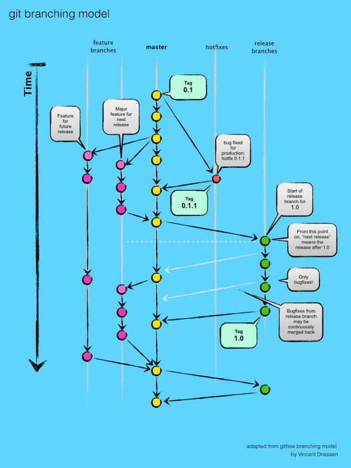
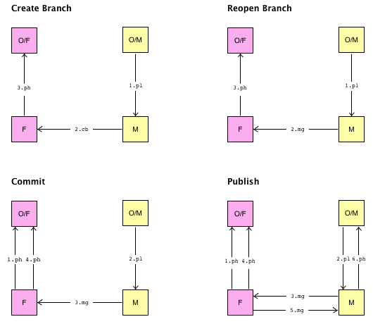

Git
Branches and Releases
Repositories are hosted at GitHub. Work is organized around GitHub issues.
YouTrack Epic issues with swimlanes group other issues into larger goals.
Tasks are a fundamental element in our workflow. AppCode, our primary IDE, supports Tasks, each normally associated with a YouTrack task.
YouTrack Agile boards, one each for backlog refinement and for development, help us to organize our work on epics, features and tasks.
AppCode projects are dependent on Xcode's project format, so projects in Objective-C/C++ are first created in Xcode.
Feature Branches
Naming Convention: <task>-#<issueNum>
Feature branches are used to develop features for a future release.
A feature branch is created from master, and merged back, if successful, to master.
In addition to standard feature branches, we also have some branches identified as "ongoing".
Currently, there are such branches for documentation and AppCode configuration in each repository,
and an Accessor branch for Slate editing.
Feature, release, and hotfix branches are all represented in this diagram:

Git Workflow diagram:

Release Branches
Naming Convention: v<versionNum>, using semantic versioning
When master is ready for a release, we assign a version number and create a release branch with name 'release-<versionNum>'.
The separate release branch supports version updating and minor bug fixes on the release branch,
while allowing work to proceed on master and feature branches.
As soon as the branch has been created, we update ("bump") the version number. Bug-fix commits may also be added.
Work from the release branch is merged into master when the release branch is tagged and closed.
Bug fixes may be incorporated sooner as indicated.
Release branches are intended to isolate their work from the rest of the project workflow.
There are no updates or merges with other repository branches.
Implementation
- When master is ready for a release,
we assign a version number and create a release branch with name 'release-<versionNum>'.
- The separate release branch supports version updating and minor bug fixes on the release branch,
while allowing work to proceed on master and feature branches.
- As soon as the branch has been created, we update ("bump") the version number. Bug-fix commits may also be added.
- Work from the release branch is merged into master when the release branch is tagged and closed.
Bug fixes may be incorporated sooner as indicated.
- Release branches are intended to isolate their work from the rest of the project workflow.
There are no updates or merges with other repository branches.
Historical Note: Until 6/16/16, we did not have a procedure for handling versioned releases,
although both Accessor and Support were assigned version 0.1 in a previous attempt.
We will rename the previous versions, and restart with v0.0 now.
Thoughts on Continuous Integration
- The current (2018.08.06) prevailing wisdom in devOps appears to be to release continuously.
- We had been concerned about the policy of closing a high-level task without looking back to see
if we had accomplished what we intended,
- As a user of some products using Continuous Integration, including JetBrains, we have now seen:
- changes that turned out to be related to upcoming features,
but that did not make sense when we first saw them
- more bugs in those areas than we expect from their developers
Historical Note
- Until 6/16/16, we did not have a procedure for handling versioned releases,
although both Accessor and Support were assigned version 0.1 in a previous attempt.
We will rename the previous versions, and restart with v0.0 now.
Hotfix Branches
Naming Convention: hotfix-v<versionNum>
Hotfix Branches are a special case of Release branches, and are handled in much the same way.
Hotfix branches are created to fix bugs in released software that must be fixed before the next Release branch.
They are checked out from the tip of the latest release tag
(git checkout tags/<latestVersionTag> -b hotfix-<versionNum>)
The three parts of the semantic version number are major release; minor release; bug fix. Hotfix branches correspond to bug fixes.
Workflow: AppCode with Waffle
Feature Branch Workflow
- Push: push current local branch to its remote
- push; if rejected(?), synchronize again and retry
- Sync Master: synchronize local and remote master branches
- checkout master; test; fetch origin/master; test; merge; test; commit; push
- Update Branch: Merge Master into Branch
- Merge Branch: merge branch into main line of development
- for merge issues: $ git revert --no-commit
While Issue Not Complete
While Task(s) Not Complete
OpenTask
- clean up stashes
- New Task: Sync Master; create new task with branch name
<productID>-<issueID>-short-desc; test; push
- or Existing Task: switch to task; Update Branch;
commit; test; push
- UI: verify Task and Branch
- repeat to commit:
- develop; inspect; test; [ diff modifications; add/stage ]
Commit
- test; inspect; check for stashes, todo's
- if [ inspection issues | stashes | todo's | settings to export ]: address as indicated
- check for complete commit: $ git cherry -v master
- test; commit; push
- Update Branch
Publish
- check for complete commit: $ git cherry -v master
- Merge Branch
- UI: synchronize Task and Branch
- if task complete, delete task and local branch
Trigger Review
- set issue state to Review
Issue Tasks Complete
Initiate Review
- master branch; check VCS log
- change issue's status from 'SwimIssue' to 'needs review'
Review
- review code; add issues as indicated
Code Review Complete: Close Issue
- test; check for unmerged branches, pending stashes
- close issue
- address any unmerged branches and/or pending stashes
[Archive Repository]
Review
- Evaluate completeness of solution as specified.
- Evaluate completeness of automated and, if required, manual testing.
- Verify test completeness and results.
- Review code for cleanness, refactoring opportunities, ...
Release and Hotfix Workflow
WARNING: Feature branches are updated frequently to and from master.
Updating to and from master is avoided in this workflow to prevent pollution of the release branch.
Create Release or Hotfix Branch
- Hotfix:
- stash any active branches
- Release:
- make sure all intended branches and stashes for this release are successfully merged
- cleanup old branches and stashes; develop / commit / publish if indicated
- select semantic version number/name, eg. v1.0.1
- establish milestone and parent version
- Hotfix branch:
- add milestone 'v<versionNum>'; describe hotfix in milestone text
- parent is the tagged release from which the hotfix will branch
- other Release branches
- rename milestone nextVersion to 'v<versionNum>'; edit existing content to release description
- add new milestone nextVersion; transfer any open tasks there
- parent is master branch
- versionName is now 'v<versionNum>'
- GitHub: from repository's Code tab, select "<n> releases"; create and save draft of revision <versionName>
- TCP (test; [commit, push])
- ensure parent branch is checked out
- when parent is not master, use git checkout -b release-<versionName> <parentTag>
- create task 'release-<versionName>' based on parent branch
- TCP
- add result of git cherry -v <mostRecentTag> to release milestone
- bump version: change all version numbers that appear in product
- change version numbers in most project files
- ...
- commit ("bump version to <versionName>"); push
- Git > tag <versionName>"; push branch and tags
Code Review
- change Waffle label from Waffle:in progress to Waffle:needs review
- NO MORE UPDATES from master
- for identified changes needed:
- create task/branch based on tagged branch
- ginfo.sh; TCP; edit; test; add/stage; TCP
Finish
- if indicated, update master from release
- master branch; merge in tagged release branch; test; [commit]; PUSH
- GitHub: from draft of Release: add product if indicated; publish
- delete release task and local branch
Archive Repository
Workflow Subtasks
Naming Conventions
- feature branches and associated tasks: <task-desc>-#<issueNum>
- release branches and associated tasks: release-v<versionNum>
- hotfix branches and associated tasks: hotfix-v<versionNum>
Commit Message Conventions
- GitHub and Waffle take actions based on some appearances of issueIDs in commit messages
- to close associated issue: add (close | fix | resolve)#<issueID> to commit message
- to connect to another issue: connect#<ID>
Compare Revisions
- Compare: (difftool --name-status first..second; lg first..second)
Compare Ancestry
- Ancestry: (difftool --name-status first...second; lg first..second)
- difference between Compare Revisions and Compare Ancestry is the extra dot in difftool for Ancestry
Bash Debug Logging
- add logger Live Template to code: `logger "$0#$LINENO: | #"`
- enter information to be logged at cursor, <logtag> content after '#'
- run code to make entries in syslog
- Terminal: syslog | grep "#<logtag>" to display tagged information
Resolve Conflicts
- status
- if conflicts: merge resolve (mergetool), saving successfully merged files
- to choose one file, use checkout --[ours | theirs] for local or merge target, respectively
- if fetchup merge fails, could try: git rebase --preserve-merges @{u}
- commit / resolve merge
- OR to undo merge: git merge --abort
- to recover corrupted project file: close in Xcode; diff fileMerge with previous good copy; edit manually
Fix Divergent Branches
Checkout Remote Branch
- git checkout -b <branchName> origin/<branchName>
Checkout from Stash
- git stash branch <branchname> [@stash{n}] # checkout stash to branch
- git checkout stash@{0} -- <filename> # checkout single file
Rebase Commits
- -- ONLY for commits that have not been pushed
- git rebase -i HEAD~<#commits>
- edit commands (pick, squash, reword, ...); save
- for reword: edit messages as they are shown
- for rebase:
- git rebase --continue
- edit comment; save
emacs Commands
- save: rX-S; exit: rX-rC; kill: rK
- cut: rW; copy: oW; paste: rY
Git Tasks
NewRepo
create and clone initial repo
- git remote add origin https://github.com/<userName>/<projectName>.git
- cd <parentFolderForNewRepo>
- git clone https://github.com/<userName>/<projectName>.git
add readme file
- echo "# <repoName>" > README.md
- git add --all
- git commit -m "initial commit"
add license, normally MIT
- GitHub, from main page of new repository: Create new file named LICENSE or LICENSE.md
- select 'Choose a license template'; select license; 'Review and submit'
- git commit -m "add <licenseType> license"
push
- git push -u origin master
Branch
- git branch # to list current branches
- --remotes # to list remote branches
- --all # to list both local and remote branches
- --no-merged # check for unmerged branches
- --move [<oldbranch>] <newbranch> # to rename a branch
- then, to rename remote branch to match:
- this assumes remote branch is named 'origin'; can use git remote -v to verify
- git push origin :<oldBranch> # delete old remote branch
- git push --set-upstream origin <newBranch> # recreate remote branch with new name
- --delete <branchname> # delete a branch
- also see git docs for information about deleting and cleaning up remote branches
- git checkout -b <new-branch> [<start_point>] # move existing work to a new branch, rooted at commit <start_point> if specified
- list branches by date:
$ for k in `git branch | sed s/^..//`; do echo -e `git log -1 --pretty=format:"%Cgreen%ci %Cblue%cr%Creset" $k --`\\t"$k";done | sort
Master Branch
- used with Xcode; otherwise, AppCode's own merge is used
- checkout branch; set $cb; show --name-status; Ancestry $cb.master
- if changed:
- not needed for now; purpose is to update our code with work from others
- checkout master; verify status clean
- fetch updates (git remote update --prune); status
- if changed: merge updateMaster (git merge --ff-only @{u})
- Resolve Conflicts; test; push
Stash
- git stash save <name> # save stash named <name>; leave working directory clean
- add --keep-index # to leave all changes already added to the index intact
- apply:
- git stash apply # to apply the top stash to the current working copy
- git stash branch # to apply the top stash to a new branch based in the stash's base revision
- git checkout stash@{n} -- <filename> # to checkout a single file from a stash
- add stash@{<index>} # to specify a different stash
- git stash list # list all stashes in repository
- git stash drop # remove the specified stash
- git stash show [stash@{n}] # show details for the top or a specified stash
Cherry
- git cherry # list commits not included in current branch
- -v # include commit message in output
- <branchName> # commits not included in specified branch
Diff
Diff Commands
- git diff # working copy and index (unstaged)
- git diff --cached # index and last commit (staged)
- git diff HEAD # working directory since your last commit (unstaged and staged)
- git diff <branch> # working copy and another branch
- git diff <branch1>..<branch2> # tips of the two branches
- git diff <branch1>...<branch2> # from their common ancestor to branch
- git difftool <arguments as above> # display results using FileMerge
Diff Options
- -- ./path # restrict to a path
- --name-status # one line per file (like svn status)
- --pretty=oneline # to show just sha and one-line comment
- --graph # to show branch relationships
- with --topo-order # shows top-down so tree is clearer
- --date-order # to show chronologically
diff a previous version of a file
- git lg --follow <filename> # show changes to this file
- st=<shaTag> # set tag to target sha
- git show --name-only <shaTag> # see commit message; get file path
- if file path is the same as current path:
- git difftool <shaTag> <filename> # diff revisions
- else
- git checkout <shaTag> <filename> # checkout file to compare
- use BBEdit to compare files
Commit
- Commit from Terminal when committing cached items only, which IntelliJ platform does not support.
- diff between branch and cached files: $ git difftool --cached (gdc)
- edit TextEdit file "${CCDev}/tmp/msg.txt" to contain git message
- dry-run commit: $ git commit --dry-run [--amend] -F ${CCDev}/tmp/msg.txt
- commit: $ git commit [--amend] -F ${CCDev}/tmp/msg.txt
- before pushing, diff log of this commit from IDE
Tag
- git tag # list
- git tag -a <tag> -m '<msg>' # create
- git tag -d <tag> # delete
- git tag <new> <new>;git tag -d <old>; git push origin :<old>; git push --tags # rename
- git ls-remote --tags origin # list remote tags
- git show <tag> # show information about <tag>
- git push --tags # push tags
- <sha> # add to select another commit
Remove Repository File(s)
- git rm --cached <filename> # remove file
- git rm --cached -r <directory> # remove directory
Bisect
- git checkout -b <newbranch> # checkout a new branch
- Detached Head
- If accidentally done from the master branch, a detached head is possible. Correct by checking the work out into new branch, which restores master to its previous state.
- git bisect start # start a bisect operation
- then execute good and bad to establish range
- git bisect bad # mark current bisect commit as bad
- git bisect good # mark current bisect commit as good
- git bisect skip # skip current bisect commit
- git bisect reset # clean up from a bisection
- git bisect log # show log of current bisection
- git bisect replay <logfile> # replay bisection from edited log output <logfile>
Log Commands
- git log <tag>.. # commits since (not reachable from) <tag>
- git log <branch>..master # commits reachable from master but not <branch>
- git log master..<branch> # commits reachable from <branch> but not master
- git log master...<branch> # commits reachable from either <branch> or master, but not both
- git log <folder>/ # commits that modify any file under <folder>/
- git lg # in-house alias to display single-line log output
Log Options
- git log --since="2 weeks ago" # commits from the last 2 weeks
- git log <filename> # commits that modify <filename>
- git log -S'<pattern>' # commits that add or remove any file data matching the string '<pattern>'
- git log --no-merges # skip merge commits
- git log --follow # follow file through renames if any
Other Information Commands
- git ls-files --other --exclude-standard # untracked files
- git branch --no-merged # check for unmerged branches
- git reflog [log options | with dates(custom)] # show reflog
Fix Line Endings
- for fixing line endings when adding files from an external source
- see GitHub: Dealing With Line Endings
- We used a slightly modified version of this technique when importing the pyparser script and its support. It seems to have worked fine, although after the reset step there were no files to add, and we were done.
- These steps show what we actually planned/did.
- checkin the files
- remove files from working tree and index: git rm --cached -r <pathnames, eg. fldr/*>
- rewrite the files back, with corrected line endings: git reset --hard
- if necessary:
- add the files back into the index: git add --all
- messages "warning: CRLF will be replaced by LF in file." are ok
- git commit -m "normalize line endings"
Undo
- git checkout -- <file> # restore one file to version in index
- git checkout HEAD <file> # restore one file to version in HEAD revision
- git reset --soft HEAD@{1} # undo last commit (set HEAD to point to parent of HEAD)
- git reset --mixed HEAD@{1} (default) # also update index to match new HEAD; same as unstaging everything
- git revert [HEAD|<commit>] # creates a new commit that undoes the most recent or a previous commit
- git reflog; git checkout <sha>; git checkout -b <branch> find and restore recently deleted branch
- revert a faulty merge
- How to undo (almost) anything with Git
- git reset --hard HEAD # discard all changes since last commit; restores index and files; then:
- master branch; make small change somewhere (ReadMe?); commit master branch; push master (requires -f?)
- rename branches between old and new heads to avoid accidental use
- to determine which branches were affected by the reset (have commits between old and new heads): list branches by date of last commit:
- for k in `git branch -r | perl -pe 's/^..(.*?)( ->.*)?$/\1/'`; do echo -e
`git show --pretty=format:"%Cgreen%ci %Cblue%cr%Creset" $k -- | head -n 1`\\t$k; done | sort -r
- for each branch to be renamed:
- checkout branch; set $cb; checkout master
- git branch --move $cb inreset_$cb
- checkout $cb; git push origin :$cb
- git push --set-upstream origin inreset_$cb
- Recovering from Problem Branches
- Sometimes we must deal with branches that have content we want, but that also
include bad changes, require a merge commit that is too complex to be safe...
- Our preferred strategy is to save both patches and a backup copies of the target files, and then
try one strategy, with the other available if problems are encountered.
- Recovery strategy
- for intended changes: leave the existing local branch in place, and probably push it
- We consider all feature branches on the repo to be private,
so there should be no work based on it. Also, for the foreseeable future,
there are no other developers anyway.
- create new branch, and make the desired source code changes again
- Procedure
- make backup copies of affected files
- determine revision <sha> to start with - a spot where master and branch match
- generate multiple patches for the problem branch
- on problem branch: git format-patch <sha>
- WARNING: If/when patches are applied, there must be NO CHANGES to any affected files
from the time the patch files are generated and until the patches have all been applied.
If changes are made, remaining patches will not apply cleanly, which will break the process.
- checkout master
- move HEAD to point to <sha>: git reset --hard <sha>
- compare local master with origin/master to verify that local master is as expected
- commit and push master: git push --force origin master
- IDEA: create new task based on *master* for the rebuilt branch
- on new branch, push: git push --force origin <branch>
- choose: IDEA diff | git patch
- IDEA diff
- diff: target branch with tip of original branch
- for each group of changes:
- make changes by applying original branch changes to target branch
- commit
- git patch
- for each patch, sequentially
- apply to new branch: git apply <patchNumber>-*.patch
- use diff from IDEA as indicated to examine and plan changes
- on receiving branch:
- TextEdit: edit and save commit message in file ${HOME}/Library/CCDev/tmp/msg.txt
- add selected hunks: git add [ -i | --interactive ] (alias 'gai')
- to undo: git reset <filename>
- view changes: git difftool --cached (alias 'gdc')
- cat ${HOME}/Library/CCDev/tmp/msg.txt (alias gcsm)
- git commit -F ~/Library/CCDev/tmp/msg(alias gcmf)
- push
- repeat until all changes in this patch have been committed
- continue until all patches have been handled
- merge master
- publish and continue
References
Notes
- rebase only to rebase an existing branch on more current code or clean up a current, unmerged branch; see Paul Stadig: Thou Shalt Not Lie
- sha/date marker: used in history and thread files to support matching history with repository
- Setting the sha/date marker replaces the clearly-visible (from source code) commit message and notes with the sha/date marker. A branch's sha/date is often updated from another branch.
- print "[$(cd /Users/carolclark/Dev/${proj}; git log -1 --pretty=format:'%h') $(date +%m/%d/20%y) <placeholder>]"
config, admin only: git remote add remote /Volumes/carollclark/gitrep/PunkinRemote # adds PunkinRemote as remote "remote"
to replace an existing working copy with a newly-cloned one, first remove the existing repository from Xcode's repository list, close the Xcode workspace, and quit Terminal (BBEdit project?)
my working copy has a branch for Laura's stuff (she pushes to Remote; I integrate and push to Main)
internal: threads; branches; compound (here or with source control?)
git diff master origin/master (same as master..origin/master?)
see git-rev-parse
see grit for ruby scripting